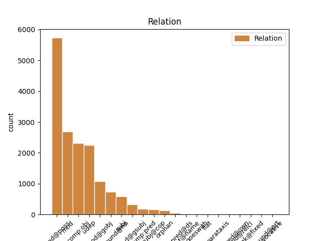
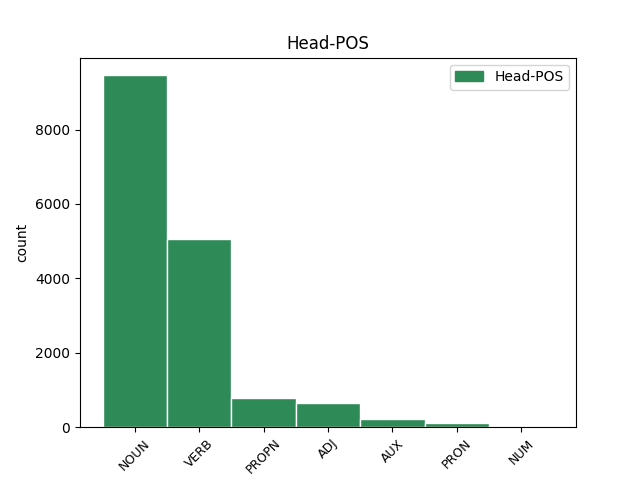
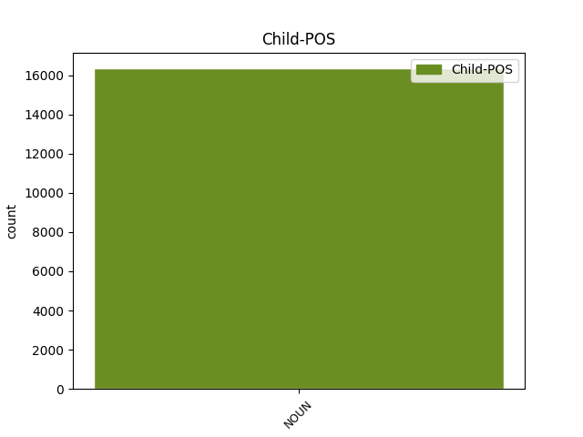

Distribution of features within this leaf



Agreement Rules sorted by frequency.
- When the dependent token is the modifer(mod@poss) of the head token, and the dependent token is NOUN.
1 Säätiö _ _ _ _ 0 _ _ _
2 oli _ _ _ _ 0 _ _ _
3 kuitenkin _ _ _ _ 0 _ _ _
4 jo _ _ _ _ 0 _ _ _
5 ennen _ _ _ _ 0 _ _ _
6 tapauksen _ _ _ _ 0 _ _ _
7 tultua _ _ _ _ 0 _ _ _
8 julkisuuteen _ _ _ _ 0 _ _ _
9 ottanut _ _ _ _ 0 _ _ _
10 käytännöksi _ _ _ _ 0 _ _ _
11 työnhaun _ _ _ _ 0 _ _ _
12 yhteydessä _ _ _ _ 0 _ _ _
13 tapahtuvan _ _ _ _ 0 _ _ _
14 työnhakijoiden työn#hakija NOUN N Case=Gen|Derivation=Ja|Number=Plur 15 mod@poss _ _
15 taustan tausta NOUN N Case=Gen|Number=Sing 0 _ _ _
16 tarkistamisen _ _ _ _ 0 _ _ _
17 . _ _ _ _ 0 _ _ _
1 Säpon _ _ _ _ 0 _ _ _
2 mukaan _ _ _ _ 0 _ _ _
3 väkivaltaisten _ _ _ _ 0 _ _ _
4 hyökkäysten _ _ _ _ 0 _ _ _
5 kohteeksi _ _ _ _ 0 _ _ _
6 ovat _ _ _ _ 0 _ _ _
7 joutuneet _ _ _ _ 0 _ _ _
8 ainakin _ _ _ _ 0 _ _ _
9 Ruotsidemokraatit _ _ _ _ 0 _ _ _
10 , _ _ _ _ 0 _ _ _
11 Maltillinen _ _ _ _ 0 _ _ _
12 kokoomus _ _ _ _ 0 _ _ _
13 ja _ _ _ _ 0 _ _ _
14 Kansanpuolue kansan#puolue NOUN N Case=Nom|Number=Sing 15 compound@nn _ _
15 liberaalit liberaali ADJ A Case=Nom|Degree=Pos|Number=Plur 0 _ _ _
16 . _ _ _ _ 0 _ _ _
1 15-vuotias _ _ _ _ 0 _ _ _
2 poika _ _ _ _ 0 _ _ _
3 menetti _ _ _ _ 0 _ _ _
4 tajuntansa _ _ _ _ 0 _ _ _
5 ja _ _ _ _ 0 _ _ _
6 sai _ _ _ _ 0 _ _ _
7 kouristuksia _ _ _ _ 0 _ _ _
8 pelattuaan pelata VERB V Case=Par|Degree=Pos|Number=Sing|PartForm=Past|Person[psor]=3|VerbForm=Part|Voice=Pass 0 _ _ _
9 20 _ _ _ _ 0 _ _ _
10 tuntia _ _ _ _ 0 _ _ _
11 World _ _ _ _ 0 _ _ _
12 of _ _ _ _ 0 _ _ _
13 Warcraft _ _ _ _ 0 _ _ _
14 -tietokonepeliä tieto#kone#peli NOUN N Case=Par|Number=Sing 8 comp:obj _ SpaceAfter=No
15 . _ _ _ _ 0 _ _ _
1 Näihin _ _ _ _ 0 _ _ _
2 on _ _ _ _ 0 _ _ _
3 käytetty _ _ _ _ 0 _ _ _
4 700 _ _ _ _ 0 _ _ _
5 euroa euro NOUN N Case=Par|Number=Sing 8 mod _ _
6 Raha-automaattiyhdistykseltä _ _ _ _ 0 _ _ _
7 saatuja _ _ _ _ 0 _ _ _
8 avustuksia avustus NOUN N Case=Par|Number=Plur 0 _ _ _
9 , _ _ _ _ 0 _ _ _
10 mikä _ _ _ _ 0 _ _ _
11 tarkoittaa _ _ _ _ 0 _ _ _
12 0,01 _ _ _ _ 0 _ _ _
13 % _ _ _ _ 0 _ _ _
14 Elämäntapaliiton _ _ _ _ 0 _ _ _
15 saamasta _ _ _ _ 0 _ _ _
16 avustusmäärästä _ _ _ _ 0 _ _ _
17 . _ _ _ _ 0 _ _ _
1 Päivystävä _ _ _ _ 0 _ _ _
2 komisario _ _ _ _ 0 _ _ _
3 Roland _ _ _ _ 0 _ _ _
4 Carlson _ _ _ _ 0 _ _ _
5 kertoi _ _ _ _ 0 _ _ _
6 poliisin poliisi NOUN N Case=Gen|Number=Sing 7 subj _ _
7 saaneen saada VERB V Case=Gen|Degree=Pos|Number=Sing|PartForm=Past|VerbForm=Part|Voice=Act 0 _ _ _
8 hälytyksen _ _ _ _ 0 _ _ _
9 naamioituneesta _ _ _ _ 0 _ _ _
10 ja _ _ _ _ 0 _ _ _
11 aseen _ _ _ _ 0 _ _ _
12 kanssa _ _ _ _ 0 _ _ _
13 liikkuneesta _ _ _ _ 0 _ _ _
14 henkilöstä _ _ _ _ 0 _ _ _
15 postin _ _ _ _ 0 _ _ _
16 edessä _ _ _ _ 0 _ _ _
17 yksityishenkilöltä _ _ _ _ 0 _ _ _
18 . _ _ _ _ 0 _ _ _
1 Wikimedia-säätiön _ _ _ _ 0 _ _ _
2 käytännön _ _ _ _ 0 _ _ _
3 toimintaa _ _ _ _ 0 _ _ _
4 johti _ _ _ _ 0 _ _ _
5 puolen _ _ _ _ 0 _ _ _
6 vuoden _ _ _ _ 0 _ _ _
7 ajan _ _ _ _ 0 _ _ _
8 muun _ _ _ _ 0 _ _ _
9 muassa _ _ _ _ 0 _ _ _
10 shekki- shekki NOUN N Case=Nom|Number=Sing 13 udep _ _
11 ja _ _ _ _ 0 _ _ _
12 luottokorttipetoksista _ _ _ _ 0 _ _ _
13 tuomittu tuomita VERB V Case=Nom|Degree=Pos|Number=Sing|PartForm=Past|VerbForm=Part|Voice=Pass 0 _ _ _
14 Carolyn _ _ _ _ 0 _ _ _
15 Doran _ _ _ _ 0 _ _ _
16 . _ _ _ _ 0 _ _ _
1 Säätiö _ _ _ _ 0 _ _ _
2 oli _ _ _ _ 0 _ _ _
3 kuitenkin _ _ _ _ 0 _ _ _
4 jo _ _ _ _ 0 _ _ _
5 ennen _ _ _ _ 0 _ _ _
6 tapauksen _ _ _ _ 0 _ _ _
7 tultua _ _ _ _ 0 _ _ _
8 julkisuuteen _ _ _ _ 0 _ _ _
9 ottanut _ _ _ _ 0 _ _ _
10 käytännöksi _ _ _ _ 0 _ _ _
11 työnhaun _ _ _ _ 0 _ _ _
12 yhteydessä _ _ _ _ 0 _ _ _
13 tapahtuvan _ _ _ _ 0 _ _ _
14 työnhakijoiden _ _ _ _ 0 _ _ _
15 taustan tausta NOUN N Case=Gen|Number=Sing 16 mod@gobj _ _
16 tarkistamisen tarkistaminen NOUN N Case=Gen|Derivation=Minen|Number=Sing 0 _ _ _
17 . _ _ _ _ 0 _ _ _
1 Uuden _ _ _ _ 0 _ _ _
2 sopimuksen _ _ _ _ 0 _ _ _
3 olisi _ _ _ _ 0 _ _ _
4 tarkoitus _ _ _ _ 0 _ _ _
5 koskea _ _ _ _ 0 _ _ _
6 Kioton _ _ _ _ 0 _ _ _
7 sopimuksen sopimus NOUN N Case=Gen|Number=Sing 8 mod@gsubj _ _
8 päättymisen päättyminen NOUN N Case=Gen|Derivation=Minen|Number=Sing 0 _ _ _
9 eli _ _ _ _ 0 _ _ _
10 vuoden _ _ _ _ 0 _ _ _
11 2012 _ _ _ _ 0 _ _ _
12 jälkeistä _ _ _ _ 0 _ _ _
13 aikaa _ _ _ _ 0 _ _ _
14 . _ _ _ _ 0 _ _ _
1 * _ _ _ _ 0 _ _ _
2 13. _ _ _ _ 0 _ _ _
3 toukokuuta _ _ _ _ 0 _ _ _
4 2009 _ _ _ _ 0 _ _ _
5 : _ _ _ _ 0 _ _ _
6 Mitro _ _ _ _ 0 _ _ _
7 Revon _ _ _ _ 0 _ _ _
8 eurovaaliehdokkuus euro#vaali#ehdokkuus NOUN N Case=Nom|Derivation=Vs|Number=Sing 9 subj@cop _ _
9 ongelma ongelma NOUN N Case=Nom|Number=Sing 0 _ _ _
10 ortodoksiselle _ _ _ _ 0 _ _ _
11 kirkolle _ _ _ _ 0 _ _ _
1 Poika _ _ _ _ 0 _ _ _
2 oli _ _ _ _ 0 _ _ _
3 pelannut _ _ _ _ 0 _ _ _
4 viime _ _ _ _ 0 _ _ _
5 lauantaina _ _ _ _ 0 _ _ _
6 ystävineen _ _ _ _ 0 _ _ _
7 läpi _ _ _ _ 0 _ _ _
8 yön _ _ _ _ 0 _ _ _
9 uutta _ _ _ _ 0 _ _ _
10 Wrath _ _ _ _ 0 _ _ _
11 of _ _ _ _ 0 _ _ _
12 the _ _ _ _ 0 _ _ _
13 Lich _ _ _ _ 0 _ _ _
14 King _ _ _ _ 0 _ _ _
15 -lisäosaa _ _ _ _ 0 _ _ _
16 , _ _ _ _ 0 _ _ _
17 joka _ _ _ _ 0 _ _ _
18 on _ _ _ _ 0 _ _ _
19 Svenska _ _ _ _ 0 _ _ _
20 Dagbladetin _ _ _ _ 0 _ _ _
21 mukaan _ _ _ _ 0 _ _ _
22 ollut olla AUX V Case=Nom|Degree=Pos|Number=Sing|PartForm=Past|VerbForm=Part|Voice=Act 0 _ _ _
23 huolenaihe huolen#aihe NOUN N Case=Nom|Number=Sing 22 comp:pred _ _
24 muidenkin _ _ _ _ 0 _ _ _
25 pelaajien _ _ _ _ 0 _ _ _
26 vanhemmille _ _ _ _ 0 _ _ _
27 . _ _ _ _ 0 _ _ _
1 Y yhtiö NOUN N Case=Gen|Number=Sing|Typo=Yes 0 _ _ _
2 htiön yhtiö NOUN N Case=Gen|Number=Sing|Typo=Yes 1 goeswith _ _
3 osake _ _ _ _ 0 _ _ _
4 nousi _ _ _ _ 0 _ _ _
5 2,7 _ _ _ _ 0 _ _ _
6 prosenttia _ _ _ _ 0 _ _ _
7 . _ _ _ _ 0 _ _ _
1 Ratkaisijan _ _ _ _ 0 _ _ _
2 asemaan _ _ _ _ 0 _ _ _
3 ovat _ _ _ _ 0 _ _ _
4 päässeet _ _ _ _ 0 _ _ _
5 niin _ _ _ _ 0 _ _ _
6 äärioikeistolaisen _ _ _ _ 0 _ _ _
7 Le _ _ _ _ 0 _ _ _
8 Front _ _ _ _ 0 _ _ _
9 Nationalin _ _ _ _ 0 _ _ _
10 ( _ _ _ _ 0 _ _ _
11 8,76 _ _ _ _ 0 _ _ _
12 % _ _ _ _ 0 _ _ _
13 ) _ _ _ _ 0 _ _ _
14 ja _ _ _ _ 0 _ _ _
15 keskusta keskusta NOUN N Case=Gen|Number=Sing|Typo=Yes 0 _ _ _
16 MoDem-puolueen MoDem#puolue NOUN N Case=Gen|Number=Sing 15 flat@name _ _
17 ( _ _ _ _ 0 _ _ _
18 5,54 _ _ _ _ 0 _ _ _
19 & _ _ _ _ 0 _ _ _
20 ) _ _ _ _ 0 _ _ _
21 kannattajat _ _ _ _ 0 _ _ _
22 . _ _ _ _ 0 _ _ _
1 * _ _ _ _ 0 _ _ _
2 27. _ _ _ _ 0 _ _ _
3 kesäkuuta _ _ _ _ 0 _ _ _
4 2009 _ _ _ _ 0 _ _ _
5 : _ _ _ _ 0 _ _ _
6 Hassi Hassi PROPN N Case=Nom|Number=Sing 0 _ _ _
7 : _ _ _ _ 0 _ _ _
8 Eduskunta edus#kunta NOUN N Case=Nom|Number=Sing 6 parataxis _ _
9 uusiksi _ _ _ _ 0 _ _ _
10 vaalirahakriisin _ _ _ _ 0 _ _ _
11 vuoksi _ _ _ _ 0 _ _ _
1 Merkintää _ _ _ _ 0 _ _ _
2 käytetään _ _ _ _ 0 _ _ _
3 etenkin _ _ _ _ 0 _ _ _
4 hintakylteissä _ _ _ _ 0 _ _ _
5 ja _ _ _ _ 0 _ _ _
6 laskuissa _ _ _ _ 0 _ _ _
7 : _ _ _ _ 0 _ _ _
8 ” _ _ _ _ 0 _ _ _
9 kuusi _ _ _ _ 0 _ _ _
10 purkkia _ _ _ _ 0 _ _ _
11 hunajaa hunaja NOUN N Case=Par|Number=Sing 0 _ _ _
12 à _ _ _ _ 0 _ _ _
13 2 _ _ _ _ 0 _ _ _
14 euroa _ _ _ _ 0 _ _ _
15 yht. _ _ _ _ 0 _ _ _
16 12 _ _ _ _ 0 _ _ _
17 euroa euro NOUN N Case=Par|Number=Sing 11 orphan _ SpaceAfter=No
18 . _ _ _ _ 0 _ _ _
19 " _ _ _ _ 0 _ _ _
1 Intialaislehdet _ _ _ _ 0 _ _ _
2 ovat _ _ _ _ 0 _ _ _
3 uutisoineet _ _ _ _ 0 _ _ _
4 , _ _ _ _ 0 _ _ _
5 että _ _ _ _ 0 _ _ _
6 Finnjetin _ _ _ _ 0 _ _ _
7 romutus _ _ _ _ 0 _ _ _
8 alkaa _ _ _ _ 0 _ _ _
9 torstaina torstai NOUN N Case=Ess|Number=Sing 0 _ _ _
10 19. _ _ _ _ 0 _ _ _
11 kesäkuuta _ _ _ _ 0 _ _ _
12 vuonna vuosi NOUN N Case=Ess|Number=Sing 9 flat _ _
13 2008 _ _ _ _ 0 _ _ _
14 Alangin _ _ _ _ 0 _ _ _
15 laivaromuttamolla _ _ _ _ 0 _ _ _
16 . _ _ _ _ 0 _ _ _
1 Linnun _ _ _ _ 0 _ _ _
2 pituus _ _ _ _ 0 _ _ _
3 on _ _ _ _ 0 _ _ _
4 noin _ _ _ _ 0 _ _ _
5 26–29 _ _ _ _ 0 _ _ _
6 cm cm NOUN N Abbr=Yes|Case=Par|Number=Sing 0 _ _ _
7 , _ _ _ _ 0 _ _ _
8 josta _ _ _ _ 0 _ _ _
9 pyrstön _ _ _ _ 0 _ _ _
10 pituus _ _ _ _ 0 _ _ _
11 14–15 _ _ _ _ 0 _ _ _
12 cm cm NOUN N Abbr=Yes|Case=Par|Number=Sing 6 mod@relcl _ SpaceAfter=No
13 , _ _ _ _ 0 _ _ _
14 siipien _ _ _ _ 0 _ _ _
15 kärkiväli _ _ _ _ 0 _ _ _
16 31–33,5 _ _ _ _ 0 _ _ _
17 cm _ _ _ _ 0 _ _ _
18 ja _ _ _ _ 0 _ _ _
19 paino _ _ _ _ 0 _ _ _
20 64–83 _ _ _ _ 0 _ _ _
21 g _ _ _ _ 0 _ _ _
22 . _ _ _ _ 0 _ _ _
1 Arvoisa _ _ _ _ 0 _ _ _
2 puhemies puhe#mies NOUN N Case=Nom|Number=Sing 4 vocative _ SpaceAfter=No
3 , _ _ _ _ 0 _ _ _
4 kiitos kiitos NOUN N Case=Nom|Number=Sing 0 _ _ _
5 huomaavaisuudestanne _ _ _ _ 0 _ _ _
6 . _ _ _ _ 0 _ _ _
1 Raivostuin _ _ _ _ 0 _ _ _
2 tietenkin _ _ _ _ 0 _ _ _
3 kysyen _ _ _ _ 0 _ _ _
4 että _ _ _ _ 0 _ _ _
5 mitä _ _ _ _ 0 _ _ _
6 helvettiä _ _ _ _ 0 _ _ _
7 tämä _ _ _ _ 0 _ _ _
8 oikein _ _ _ _ 0 _ _ _
9 yritti _ _ _ _ 0 _ _ _
10 , _ _ _ _ 0 _ _ _
11 ja _ _ _ _ 0 _ _ _
12 sain _ _ _ _ 0 _ _ _
13 vastaukseksi _ _ _ _ 0 _ _ _
14 “ _ _ _ _ 0 _ _ _
15 vitsi vitsi NOUN N Case=Nom|Number=Sing 0 _ _ _
16 vitsi vitsi NOUN N Case=Nom|Number=Sing 15 unk@fixed _ SpaceAfter=No
17 ” _ _ _ _ 0 _ _ _
18 enkä _ _ _ _ 0 _ _ _
19 mitään _ _ _ _ 0 _ _ _
20 muuta _ _ _ _ 0 _ _ _
21 . _ _ _ _ 0 _ _ _
Disagree Examples:
1 Jäällä jää NOUN N Case=Ade|Number=Sing 2 mod _ _
2 kävely kävely NOUN N Case=Nom|Derivation=U|Number=Sing 0 _ _ _
3 avaa _ _ _ _ 0 _ _ _
4 aina _ _ _ _ 0 _ _ _
5 hauskoja _ _ _ _ 0 _ _ _
6 ja _ _ _ _ 0 _ _ _
7 erikoisia _ _ _ _ 0 _ _ _
8 näkökulmia _ _ _ _ 0 _ _ _
9 kaupunkiin _ _ _ _ 0 _ _ _
10 . _ _ _ _ 0 _ _ _
1 Jäällä _ _ _ _ 0 _ _ _
2 kävely _ _ _ _ 0 _ _ _
3 avaa _ _ _ _ 0 _ _ _
4 aina _ _ _ _ 0 _ _ _
5 hauskoja _ _ _ _ 0 _ _ _
6 ja _ _ _ _ 0 _ _ _
7 erikoisia _ _ _ _ 0 _ _ _
8 näkökulmia näkö#kulma NOUN N Case=Par|Number=Plur 0 _ _ _
9 kaupunkiin kaupunki NOUN N Case=Ill|Number=Sing 8 mod _ SpaceAfter=No
10 . _ _ _ _ 0 _ _ _
1 Vähän _ _ _ _ 0 _ _ _
2 samanlainen _ _ _ _ 0 _ _ _
3 tunne _ _ _ _ 0 _ _ _
4 kuin _ _ _ _ 0 _ _ _
5 silloin _ _ _ _ 0 _ _ _
6 , _ _ _ _ 0 _ _ _
7 kun _ _ _ _ 0 _ _ _
8 ystävämme _ _ _ _ 0 _ _ _
9 vei _ _ _ _ 0 _ _ _
10 meidät _ _ _ _ 0 _ _ _
11 kerran _ _ _ _ 0 _ _ _
12 ylös _ _ _ _ 0 _ _ _
13 tuomiokirkon tuomio#kirkko NOUN N Case=Gen|Number=Sing 14 mod@poss _ _
14 torniin torni NOUN N Case=Ill|Number=Sing 0 _ _ _
15 . _ _ _ _ 0 _ _ _
1 Tuomiokirkko tuomio#kirkko NOUN N Case=Nom|Number=Sing 0 _ _ _
2 rakennuksena rakennus NOUN N Case=Ess|Number=Sing 1 mod _ _
3 tekee _ _ _ _ 0 _ _ _
4 minuun _ _ _ _ 0 _ _ _
5 aina _ _ _ _ 0 _ _ _
6 suuren _ _ _ _ 0 _ _ _
7 vaikutuksen _ _ _ _ 0 _ _ _
8 . _ _ _ _ 0 _ _ _
1 Pidän _ _ _ _ 0 _ _ _
2 sen _ _ _ _ 0 _ _ _
3 majesteetillisuudesta _ _ _ _ 0 _ _ _
4 sekä _ _ _ _ 0 _ _ _
5 eri _ _ _ _ 0 _ _ _
6 aikakausien aika#kausi NOUN N Case=Gen|Number=Plur 7 mod@poss _ _
7 kerroksellisuudesta kerroksellisuus NOUN N Case=Ela|Derivation=Llinen,Vs|Number=Sing 0 _ _ _
8 . _ _ _ _ 0 _ _ _